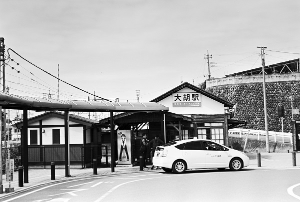

JMT09_上毛鉄道 上毛線
JMT09_大胡駅 Ogo
江木駅
←← 上毛鉄道 上毛線 →→
樋越駅

2018/4 PentaxSP ﾃｯｻｰ50mm ｱｸﾛｽ
2018/4 PentaxSP ﾃｯｻｰ50mm ｱｸﾛｽ
2018/4 DP1
2018/4 PentaxSP ﾃｯｻｰ50mm ｱｸﾛｽ
2018/4 PentaxSP ﾃｯｻｰ50mm ｱｸﾛｽ
2018/4 PentaxSP ﾃｯｻｰ50mm ｱｸﾛｽ
戻る
ﾎｰﾑ